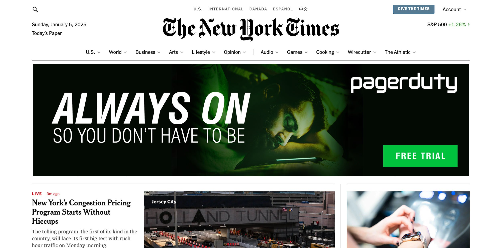

PagerDuty Ads

PROBLEM: No real campaign history. Needed growth beyond word of mouth.
SOLUTION: Found the core hook and built ads that spoke directly to people doing the job.
ROLE: Art Director


How We Did It
Introduced a real creative process
Made the case for a copywriter, got buy-in, and built a proper concept-driven approach.
Found the insight that mattered
Cut through noise and landed on time and stress as the real pain points.
Built a system from nothing
Created a visual language rooted in the brand and a message people actually responded to.
Impact
Established PagerDuty's first real campaign framework
Drove free trial growth through insight-led creative
Proved the value of pairing strategy, copy, and design